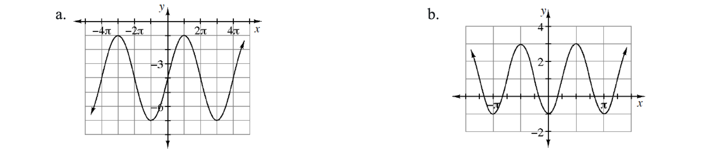

Use Austin's method to compute the sum of each series below.
\(1+5+25+125+625+3125+15{,}625\)
\(5+15+45+\ldots+885{,}735\)
Calculate each of the following sums.
\(10+10.5+11+11.5+\ldots+99\)
\(20+20(1.05)+20(1.05)^2+20(1.05)^3+\ldots+20(1.05)^{20}\)
\(400-200+100-50+\ldots+6.25\)
As stated in the preceding Math Notes box, in a recursive sequence, each term is defined in terms of one or two of the terms immediately preceding. Practice this idea by using the first term and the recursive definition to write the next four terms of each of these sequences. Part (a) is partially done for you.
\(a_{n+1}=a_n-10;\quad a_1=5\)
\(b_{n+1}=(b_n)^2+4;\quad b_1=0\)
\(z_{n+1}=\frac{3}{4}z_n;\quad z_1=4\)
\(w_{n+2}=w_{n+1}\cdot w_n;\quad w_1=3,\ w_2=5\)
Write the equation of a function in the form \(y=f(x)\) for each of the sets of parametric equations below.
\(x=2t\)
\(y=t^2-6t\)
\(x=t^2+1\)
\(y=t-1\)
Let \(z_1=7\left(\cos\left(\frac{5\pi}{4}\right)+i\sin\left(\frac{5\pi}{4}\right)\right)\) and \(z_2=4\left(\cos\left(\frac{\pi}{6}\right)+i\sin\left(\frac{\pi}{6}\right)\right)\). Evaluate:
\(z_1z_2\)
\(\frac{z_1}{z_2}\)
Solve each of the following equations.
\(18(1.03)^x-20=300\)
\(\log_4(5)+\log_4(x)=3\)
\(8\cdot2^x=160\)
\(\log_6(x+5)-\log_6(x-1)=1\)
For each graph, use graph to write two equations, one that uses sine and one that uses cosine, that will generate the graph.

A ball is thrown off the top of a building and lands on the ground below. The function \(h(t)=-16t^2+64t+48\) gives the ball's height in feet with respect to time in seconds.
How long will the ball be in the air?
Make a table of the function using 1-second increments. Use the table to sketch a graph of the function over the interval that fits this situation.
Calculate the average velocity for each 1-second time interval that the ball is in the air.
What is happening to the average velocity of the ball with respect to the time?
What does the average velocity tell you about the change in position of the ball?